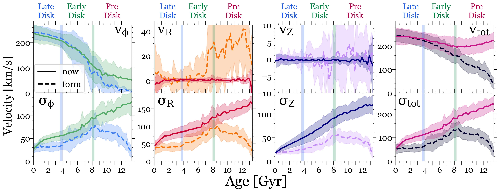

Stellar Kinematics across the Formation Histories of MW-like Galaxies
Median velocities and velocity dispersions for stars versus age, within cylindrical R = 6 - 10 kpc and |Z| < 3 kpc at z=0. Age bins have a width of 250 Myr.The lines show the average and the shaded regions show the standard deviation across 11 MW-mass galaxies, with velocities measured at z=0 (solid) and at the time of formation (dashed, including only in-situ stars). The shaded vertical bars show when our galaxies transitioned from the Pre-Disk to the Early-Disk Era (~8 Gyr ago) and the Early-Disk to the Late-Disk Era (~4 Gyr ago), on average.
Top row:Median velocity versus age. For most of the Pre-Disk Era, stars formed with little net rotation, but v_phi,form rapidly increased in the Early-Disk Era when the disk initially formed, and it increased at a lower rate in the Late-Disk Era when the disk further settled. Stars that formed in the Pre-Disk Era have v_phi,now > v_phi,form from dynamical torquing after formation, while stars that formed in the Late-Disk Era now have slightly smaller v_phi, now than at formation from post-formation dynamical heating.
v_R and v_Z fluctuated at formation in the Pre- and Early-Disk Eras, because of frequent mergers, rapid accretion, bursty star formation, and gaseous outflows, but today they are 0 across all ages.v_tot,form steadily increased at all times, but v_tot,now is nearly independent of age, because all stars have been dynamically heated to orbit near the virial velocity.
Bottom row: Velocity dispersion versus age. All 3 components and the total show the same trends with age. sigma_form increased throughout the Pre-Disk Era as the galaxy grew, peaking ~8 Gyr ago, but decreased throughout the Early-Disk Era and remained constant throughout the Late-Disk Era. By contrast, sigma_now monotonically increases with stellar age because of the dynamical heating of stars after their formation.
Thus, the kinematics of stars today do not simply reflect their kinematics at formation.
For further insight into the evolution of stellar kinematics in MW-like galaxies, see McCluskey et al. (2024).